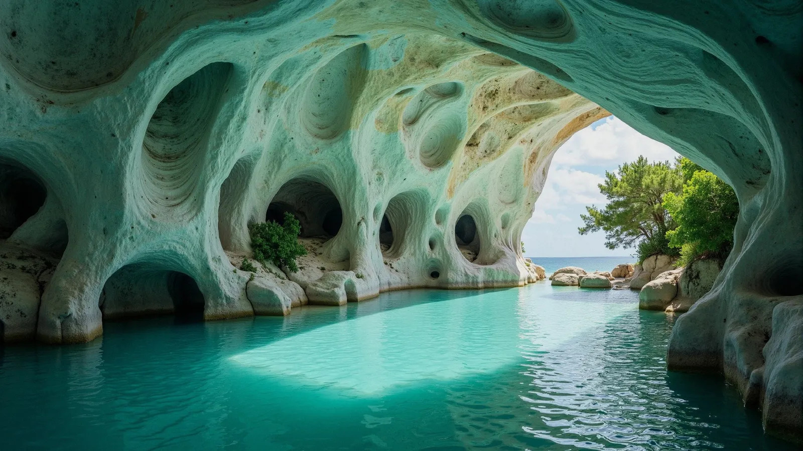
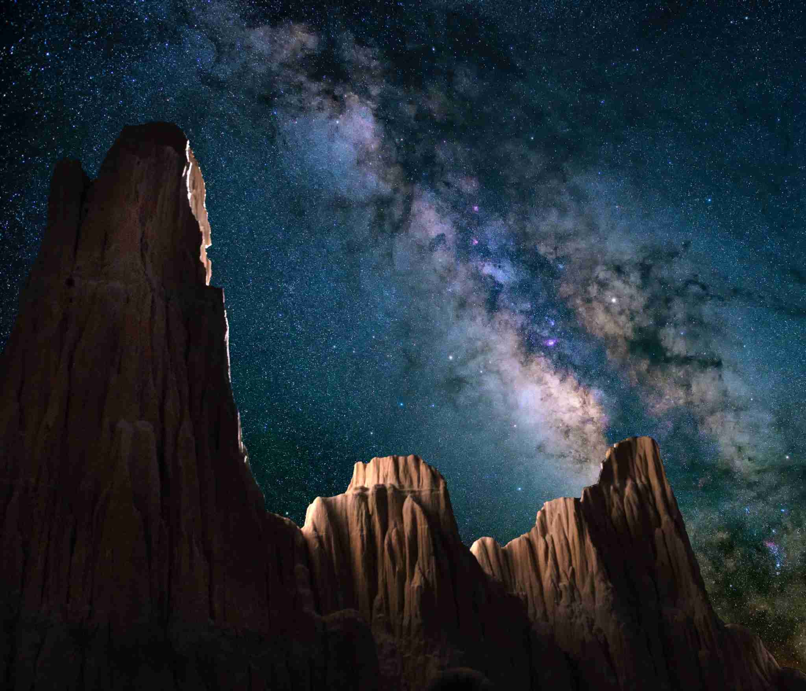
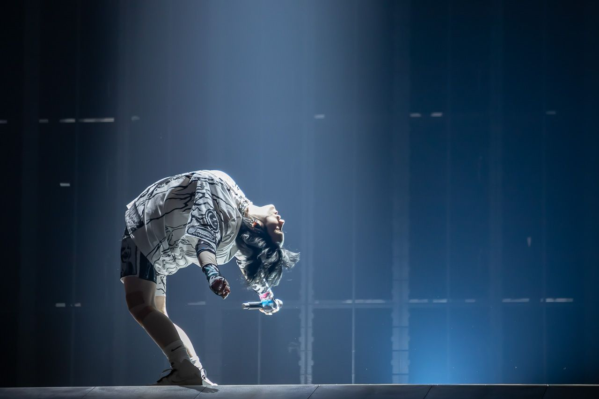
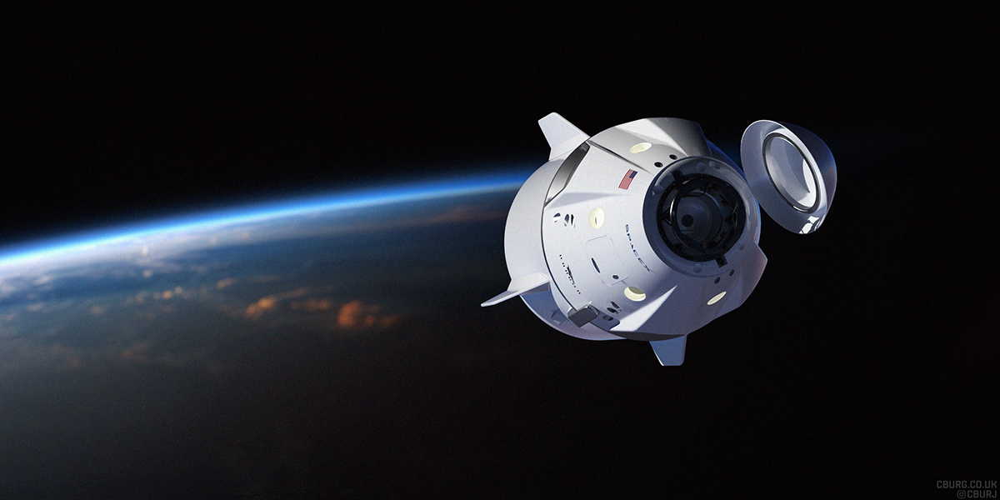
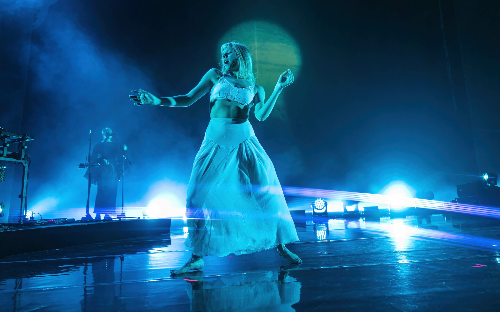
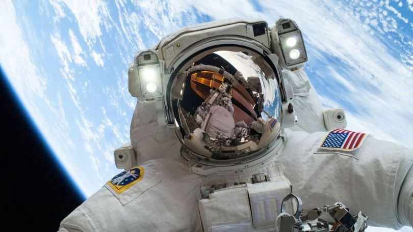

Breath Code Photo Feed
Paraíso donde el alma respira 🌅🌴
01/01/2024

Bajo un cielo que cuenta historias 🌠💫
30/07/2025

Billie en vivo… y el alma vibró 🖤🎶
01/01/2024

Más allá del cielo… empieza la realidad espacial 🪐✨o
30/07/2025

La voz que parece venir de los bosques del alma 🍃🌙
11/11/2024

Un paso para uno... pero un salto para todos 🚀👣
30/07/2025
